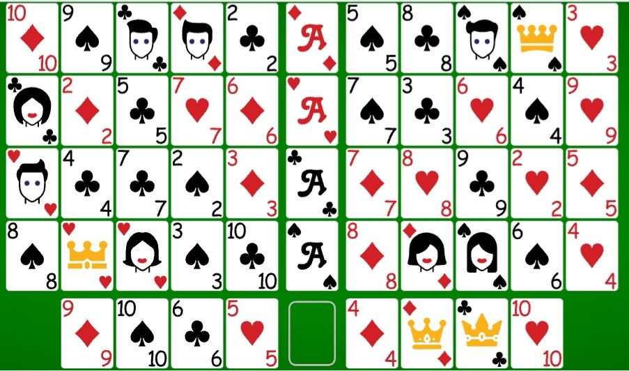
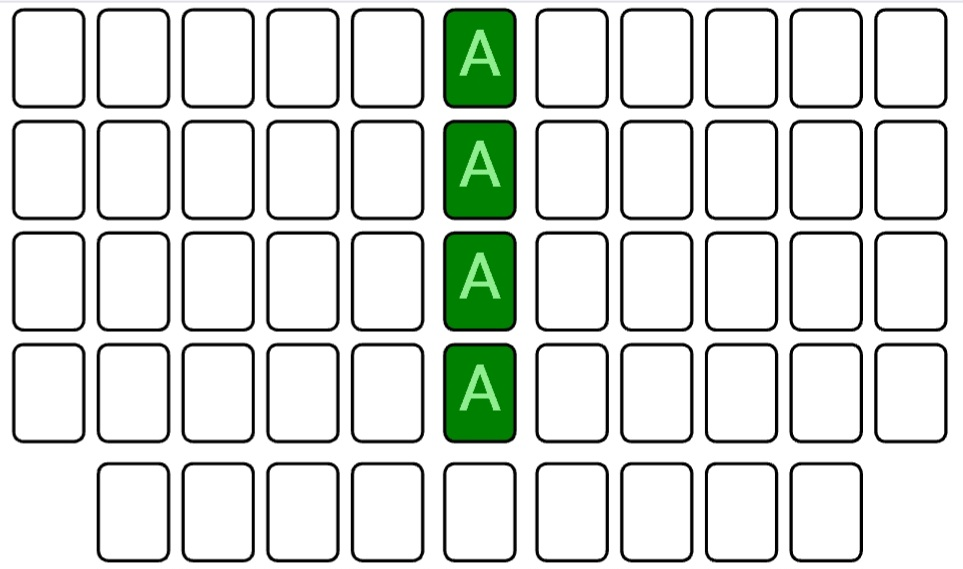
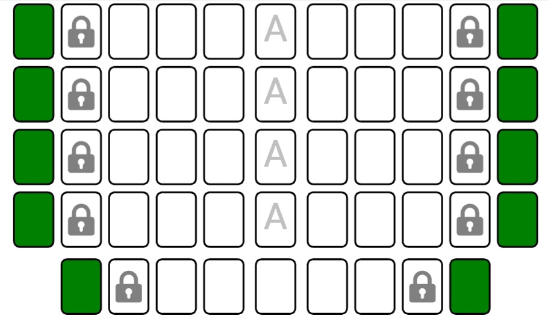
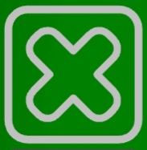
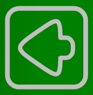
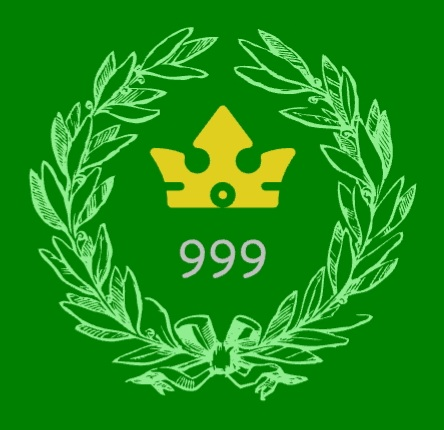

Пасьянс "Мастерский"
На главную страницуДля удобства играйте в горизонтальной ориентации экрана (landscape orientation).
Об игре
Сложный карточный пазл, где придётся изрядно поломать голову. С самого начала все карты открыты и лежат «ковром». Главная фишка не в том, чтобы просто раскладывать, а в стратегическом выборе: пытаться довести расклад до конца или вовремя признать, что он нераскладываемый, и пересдать, чтобы не потерять очки. Решение «сдаться» сразу — это не проигрыш, а допустимая тактика: ты осознанно теряешь меньше, чем мог бы, и получаешь новый «ковёр». Перед решением начать игру требуется в уме произвести расчёт. Каждый расклад имеет в начале много ложных ходов. Легко сделать пару красивых перемещений и загнать себя в тупик.
Правила
-
52 карты раскладываются как на рисунке ниже.
Четыре туза кладутся в центр.
Под тузами находится пустое место, которое называется "подвал".

-
Цель игры: на четырёх тузов в центральном вертикальном ряду необходимо собрать все карты
по масти последовательно либо в возрастающем (с двойки до короля),
либо в убывающем (с короля до двойки) порядке.

- Начав собирать карты на одного туза, положив на него двойку или короля, далее следует придерживаться выбранного порядка для всех остальных тузов.
-
Разрешено пользоваться только свободными, крайними боковыми картами.
Остальные внутренние карты остаются заблокированными,
пока сами в свою очередь не станут крайними свободными картами по мере того, как ряд будет разбираться.

- Свободные карты одной масти можно перекладывать друг на друга в любом убывающем или возрастающем порядке. Одиночные карты, таким образом положенные друг на друга, образуют пачки. Пачки карт также можно перекладывать друг на друга, равно как и одиночные свободные карты можно добавлять к пачкам, либо пачки перекладывать на одиночные свободные карты, соблюдая масть и порядок.
-
Если боковой ряд с любой из сторон какого-либо туза разобран (пять карт в ряду),
то на это пустое место можно переложить любую свободную карту (как одиночную, так и пачку).

-
Пустое место в нижнем горизонтальном ряду посередине называется "подвалом",
куда можно отправить любую свободную карту, но только одиночную.
Всю пачку карт в подвал убрать нельзя.

-
Карта в подвале остаётся запертой.
Освободить и убрать карту из подвала можно, если разобрать ряд из четырёх карт с любой стороны "подвала".
Эти нижние ряды из четырёх карт называются "стенами подвала" (на схеме красным).
Таким образом, "стены" блокируют карту в "подвале", пока одна из этих "стен" не убрана.

Очки
- За все разложенные карты, если на всех четырёх тузах одинаково соблюдён убывающий или возрастающий порядок, добавляется пять очков (+5). Это победа.
-
Если же карты все разложены,
НО одинаковый порядок (убывающий или возрастающий) на всех четырёх тузах НЕ соблюдён,
очки не присуждаются (ноль очков).
Это ничья.

-
Если игрок, сделав ходы (хотя бы один ход), не смог до конца решить расклад и сдался,
то снимается три очка (-3).
Это проигрыш.

-
Если игрок, оценив новый расклад, сразу в самом начале заключил,
что расклад не имеет решения, и сдался, НЕ сделав ни одного хода,
тогда снимается только одно очко (-1).

-
За отмену хода снимается одно очко, но только один раз за игру.
Таким образом, отмену хода можно делать любое количество раз,
но за это сгорит всего лишь одно очко (-1).

-
Полная победа присуждается, если игрок наберёт максимально 999 очков.

- Все накопленные очки исчезнут, если очистить историю браузера (cookies-файлы). Счёт начнётся заново с нуля.
На главную страницу